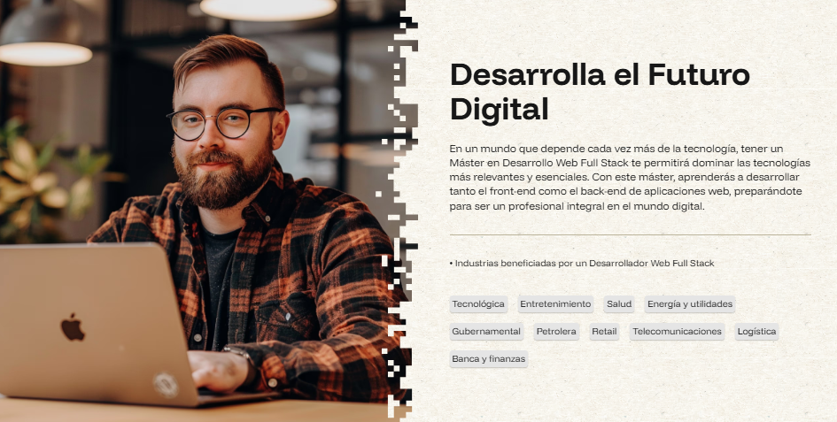
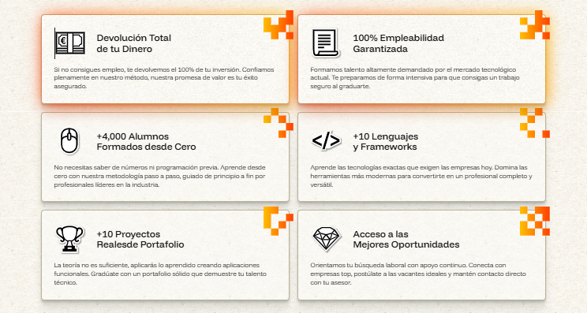
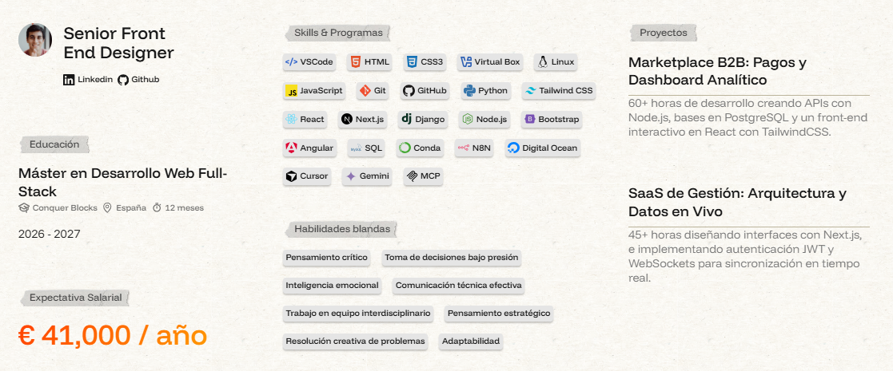
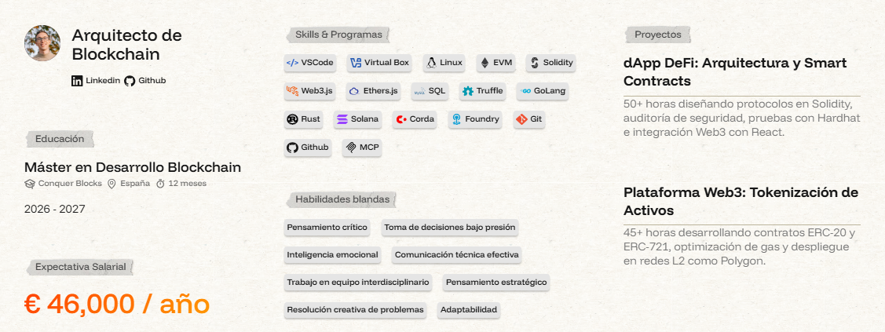
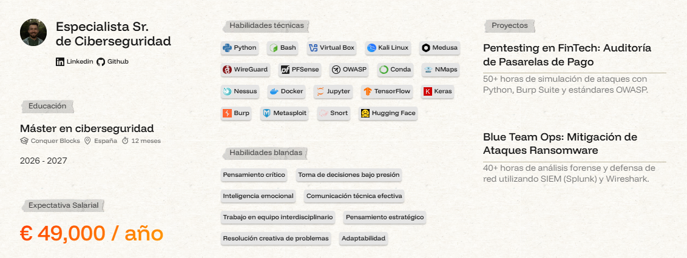
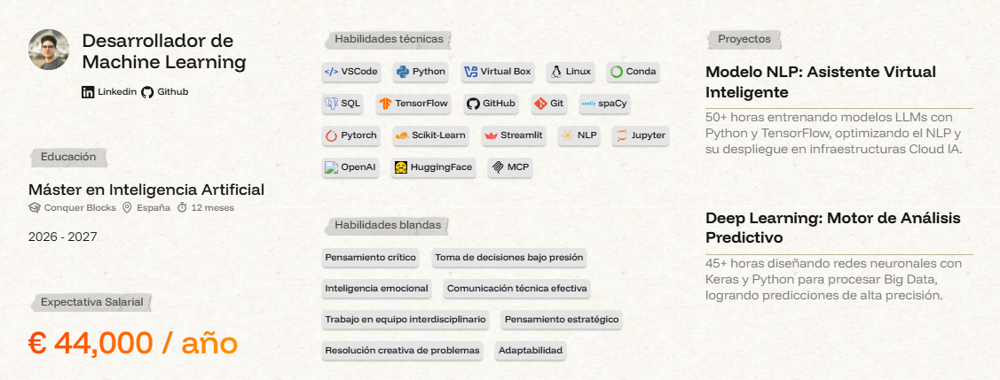

En conquer Crypto te podrás formar en las tecnologías más demandadas del mercado laboral como Desarrollo Web Fullstack + IA, Blockchain y Ciberseguridad.
Bienvenido a la Academia para Desarrollo Fullstack, IA, Ciberseguridad y Blockchain
Descubre y aprende habilidades y todo lo relacionado con Desarrollo Web, Blockchain, Criptomonedas y Ciberseguridad en nuestra academia.



Descubre quien es Conquer Crypto?
Conquer Crypto
Últimos cursos
Descubre los últimos cursos que podras encontrar en nuestra academia Conquer Blocks
Aprende a desarrollar aplicaciones Web
completas Full-Stack
utilizando tecnologías modernas como:
HTML, CSS, JavaScript, Node.js y bases de datos, contenido de calidad y actualizados.
Además, aprende a desarrollar aplicaciones completas utilizando los fundamentos de
la industria Blockchain y sus tecnologías. Tambien aprende a desarrollar aplicaciones
completas utilizando los fundamentos de la industria IA y sus tecnologías.
Asi mismo, aprende a proteger sistemas y datos con nuestro curso de Ciberseguridad.
Master Desarrollo Web Fullstack

Desarrollo Web Fullstack
Aprende a desarrollar aplicaciones web completas utilizando tecnologías modernas como HTML, CSS, JavaScript, Node.js y bases de datos.
Master Desarrollo Blockchain

Desarrollo Blockchain
Aprende a desarrollar aplicaciones completas utilizando los fundamentos de la industria Blockchain y sus tecnologías
Master de Ciberseguridad

Curso de Ciberseguridad
Especialízate en Ciberseguridad con una formación práctica guiada por expertos del sector.
Master de Inteligencia Artificial

Curso de Inteligencia Artificial
Aprende a desarrollar aplicaciones completas utilizando los fundamentos de la industria IA.
Si quieres ver todos los cursos haz click aquí
Últimas noticias en nuestro Blog que tambén es tuyo
-
Descubre las utimas noticias del mundo del desarrollo de software, ciberseguridad y blockchain en nuestro Blog
¿Qué es un Algoritmo y por qué es tan Importante?
Ver Noticias de Algoritmos
Un *algoritmo* es un conjunto de instrucciones ordenadas y definidas para resolver un problema o realizar una tarea. Es como una receta de cocina: tienes ingredientes (datos de entrada), sigues una serie de pasos (proceso) y obtienes un resultado (salida).
Por ejemplo, si quieres hacer un sándwich, podrías seguir estos pasos:
- Tomar dos rebanadas de pan.
- Untar mantequilla en una de ellas.
- Colocar jamón y queso encima.
- Tapar con la otra rebanada de pan.
Eso es un algoritmo: Una serie de pasos estructurados para obtener un resultado concreto. En la programación, la lógica y el orden de los pasos son fundamentales para obtener la respuesta correcta.
Desarrollo Web Fullstack
Ver Noticias Full Stack
“FullStack”, ese término tan de moda que escuchas cada día en los anuncios de Instagram, en las redes de Facebook y hasta en los periódicos digitales de hoy en día. ¿Pero te has preguntado alguna vez si sabes realmente lo que es un Desarrollador Full-Stack.?
Trilema de la tecnología Blockchain
Ver Noticias de Blockchain
Las cadenas de bloques solamente son capaces de manejar un determinado número de transacciones por segundo.
Si quieres ver todas las noticias haz click aquí
Especialízate en una profesion altamente demandada y con una formación práctica guiada por expertos del sector